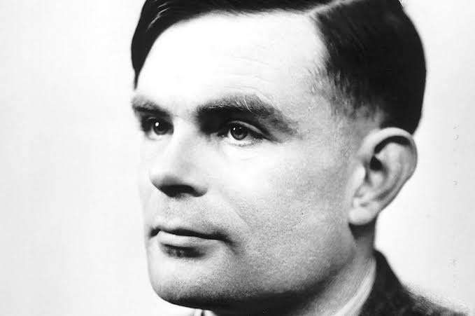

Alan Mathison Turing, the Father of Computer Science, was a mathematician, computer scientist, logician, cryptanalyst, philosopher, and theoretical biologist. He played a big role in the decryption of the German Enigma Machine in WWII.
Although code and ciphers were not a new technology come WWII, “the idea that one might construct a universal machine capable of simulating any other machine was introduced by the mathematician Alan Mathison Turing,”(Gladwin).
During WWII, the British created a machine to do just that. It was called the "bombe”. These machines allowed the British to imitate the German enigma machines, cipher their code, and learn German plans ahead of time.
This capability was crucial in several Allied victories and significantly shortened the duration of the war, saving countless lives. “Without Alan Turing’s revolutionary essay, "On Computable Numbers" (1936), where he maintained that
"anything performed by a human computer [i.e., a human who worked with numbers] could be done by a machine,"(Gladwin), the outcome of the war could have been very different.
Citations:
Gladwin, Lee A. “Alan Turing, Enigma, and the Breaking of German Machine ...” National Archives, www.archives.gov/files/publications/prologue/1997/fall/turing.pdf. Accessed 11 May 2024.